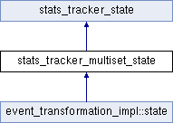

#include <stats_tracker.h>
Inheritance diagram for stats_tracker_multiset_state:

Public Member Functions | |
| const cata_variant & | get_value () const override |
 Public Member Functions inherited from stats_tracker_state Public Member Functions inherited from stats_tracker_state | |
| virtual | ~stats_tracker_state ()=0 |
Detailed Description
Definition at line 181 of file stats_tracker.h.
Member Function Documentation
◆ get_value()
|
overridevirtual |
Implements stats_tracker_state.
Definition at line 222 of file stats_tracker.cpp.
References cata_fatal.
The documentation for this class was generated from the following files:
- src/stats_tracker.h
- src/stats_tracker.cpp